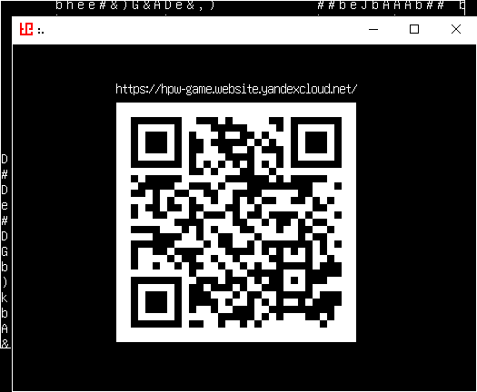

Зачем QR?
Это чтобы отображать ссылки на помощников разраба. На меня там ссылки конечно не будет, нафиг я вам. Библиотека что это рисует называется Nayuki/QR-Code-generator. Выбрал коррекцию ошибок LOW, думаю что проблем со считыванием кодов с экрана не будет ни у кого, а если будут то жалуйтесь на мыло.
Люблю писать всяким авторам о том, что мне что-то нравится или что я использовал их контент - я так уже написал Pigmhall, Joel Yliluoma (bisqwit) и этому Nayuki. Кста, Nayuki ответил в тот же день. Он не поленился перевести моё письмо с русского, в отличии от Бисквита... Pigmhall вообще японец и тоже переводил, так что это говорит о том что Бисквит - ЧСВшный финн. Я реально не парюсь и пишу им письма на русском, хотя мог бы перевести на инглиш.